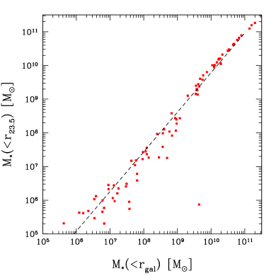
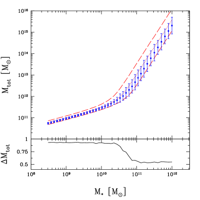
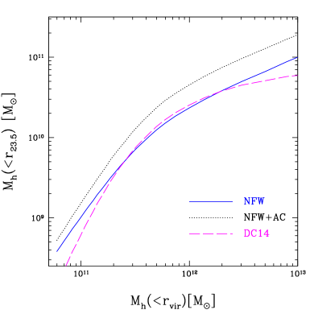
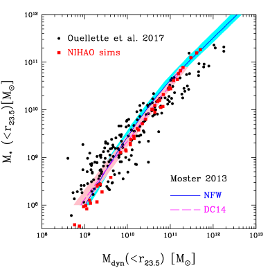
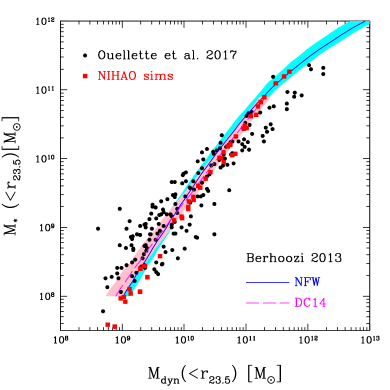

اختبار مطابقة الوفرة على المقاييس الصغيرة بديناميكيات المجرات
الملخص
نقدّم اختباراً شاملاً للعلاقة بين الكتلة النجمية والكتلة الكلية في المجرات كما تتنبأ بها النماذج الشائعة القائمة على تقنيات مطابقة الوفرة (AM). نستخدم مسح “التحليل الطيفي والتصوير في نطاق H لمجرات عنقود العذراء” (SHIVir) مع الملامح الفوتومترية والديناميكية لـ 190 مجرة في عنقود العذراء لإرساء علاقة بين الكتل النجمية والديناميكية المقيسة ضمن نصف القطر متساوي السطوع . وتُدمج علاقات قياس متنوعة للمادة المظلمة والمجرات مع نتائج من مجموعة محاكاة NIHAO الهيدروديناميكية لإعادة صياغة تنبؤات AM بدلالة هذه الكميات المرصودة. وتبيّن نتائجنا أنها غير حساسة إلى حد كبير للاختيار الدقيق لملف المادة المظلمة ولاستجابة الهالة لانهيار الباريونات. نجد أن النماذج النظرية تعيد إنتاج ميل العلاقة المرصودة بين الكتلة النجمية وكتلة الهالة (SHMR) ومعايرتها على امتداد أكثر من ثلاثة رتب قدرية في الكتلة النجمية . غير أن تشتت SHMR المرصودة يتجاوز تشتت تنبؤات AM بعامل 5. وفي الأنظمة التي تتجاوز كتلها النجمية ، تبالغ AM في تقدير الكتل النجمية المرصودة عند كتلة ديناميكية معطاة. وقد يدعم هذا الانزياح الأخير مؤشرات سابقة على اختلاف دالة الكتلة الابتدائية النجمية في هذه المجرات الضخمة. وبوجه عام تدعم نتائجنا صلاحية تنبؤات AM على نطاق ديناميكي واسع.
keywords:
علم الكونيات: النظرية – المادة المظلمة – المجرات: التكوّن – المجرات: الكينماتيك والديناميك – طرائق: عددية1 المقدمة
في كون تهيمن عليه المادة المظلمة والطاقة المظلمة، يمثّل تكوّن المجرات مزيجاً معقداً من التجميع الهرمي للكتلة، وتبريد الغاز، وتكوّن النجوم، والتطور الداخلي طويل الأمد.
في السنوات الأخيرة، برزت علاقة القياس بين الكتلة النجمية وكتلة الهالة (أو الكتلة الكلية) بوصفها اتجاهاً أساسياً ينبغي أن يعيد إنتاجه أي نموذج، نظري أو عددي، يهدف إلى تفسير العملية المعقدة لتكوّن المجرات وتوصيفها. وقد أصبحت علاقة الكتلة النجمية إلى كتلة الهالة (SHMR فيما يلي)، التي مهّد لها Moster et al. (2010) ثم نقّحها لاحقاً مؤلفون آخرون (مثلاً Behroozi et al., 2013; Moster et al., 2013; Kravtsov et al., 2018)، واحداً من الاختبارات الرئيسة لنماذج تكوّن المجرات عند الانزياحات الحمراء المنخفضة والعالية (مثلاً Stinson et al., 2013; Hopkins et al., 2014; Schaye et al., 2015; Wang et al., 2015).
وفي حين تنشأ علاقات قياس عديدة للمجرات مباشرة من الجمع المباشر بين رصديات أساسية، مثل اللمعان والسرعة في علاقتي فابر-جاكسون وتولي-فيشر (Faber and Jackson, 1976; Tully and Fisher, 1977) أو علاقات الحجم-السرعة (Courteau et al., 2007)، فإن SHMR مزيج هجين من الرصد والنظرية، قائم على نموذج مطابقة الوفرة (AM) الذي يفترض أن مجرة ذات وفرة حجمية ومجال كتلوي معطى (مثلاً بعدد في كل ميغابارسك مكعب لكل ديكس كتلي) ستسكن هالات من المادة المظلمة لها الكثافة الفضائية نفسها.
وعلى الرغم من جاذبية SHMR الواسعة، فليس من السهل قياسها ومعايرتها نظراً إلى التحدي الجوهري في قياس الكتلة الكلية (كتلة الهالة) للمجرات مباشرة. وتتيح بعض تقنيات النمذجة مثل العدسة الجذبوية وديناميكيات الأقمار قياس الكتلة الكلية في أطراف المجرات، إلا أن هذه الطرائق تُطبَّق عادة على المجرات الضخمة نسبياً فقط، وتبقى هذه القياسات محدودة إلى حد كبير (مثلاً Courteau et al., 2014).
في هذه الورقة، نقدّم مقاربة مختلفة لهذه المسألة: فبدلاً من استغلال علاقات SHMR المنشأة من الرصديات وحدها، نجمع مجموعة من علاقات قياس المجرات المرصودة مع محاكيات كونية هيدروديناميكية لتكوّن المجرات (أي مشروع NIHAO: Wang et al., 2015) لإعادة صياغة تنبؤات مطابقة الوفرة ضمن إطار أكثر عملية.
وتتيح تقنيتنا مقارنة التنبؤات النظرية لـ SHMR من نموذجين من أكثر نماذج AM استعمالاً، وهما نموذجا Behroozi et al. (2013) وMoster et al. (2013)، مع النتائج الرصدية من مسح SHIVir للمعاملات البنيوية لـ 190 مجرة محلولة مكانياً في عنقود العذراء (Ouellette et al., 2017). وتوفّر SHMR الشاملة لدينا فرصة ممتازة لاختبار مسلّمات متعددة كامنة في النماذج النظرية لتكوّن المجرات.
2 البيانات الرصدية
نستفيد من مسح “التحليل الطيفي والتصوير في نطاق H لمجرات عنقود العذراء" (SHIVir) لـ 190 مجرة في عنقود العذراء لاستخراج المعاملات البنيوية اللازمة لدراستنا، مثل الكتل النجمية، والكتل الديناميكية، والأحجام متساوية السطوع، وغيرها.
SHIVir مسح بصري وقريب من الأشعة تحت الحمراء يجمع تحليل فوتومترية Sloan Digital Sky Survey (SDSS)، وفوتومترية عميقة في نطاق H، وتحليلاً طيفياً طويل الشق حُصل عليه على نحو موحّد بعدة تلسكوبات وأجهزة. ويغطي فهرس SHIVir المؤلف من 190 مجرة في عنقود العذراء (VCGs) جميع الأنواع المورفولوجية على مدى كتلة نجمية من إلى ، بما في ذلك 133 من VCGs لها ملامح حركية محلولة (منحنيات دوران وملامح تشتت). ويُعرض فهرس SHIVir الفوتومتري في McDonald et al. (2009) [تصوير نطاق H]، وRoediger et al. (2011a, b) [تصوير متعدد النطاقات وتحليل للسكان النجميين]، وOuellette et al. (2017, و2020 قيد الإعداد) [تحليل طيفي طويل الشق]. ونحيل إلى هذه الأوراق من أجل وصف مفصل لاختيار الفهرس. وتتاح بيانات SHIVir الفوتومترية على http://www.astro.queensu.ca/virgo. وستُعرض بيانات SHIVir الطيفية في Ouellette وآخرون (2020؛ قيد الإعداد). وبالمجمل، فإن SHIVir قاعدة بيانات شاملة للمعاملات الفوتومترية والحركية لمجرات عنقود العذراء، وتضم مقادير وأنصاف أقطار فعالة ومتساوية السطوع في grizH، وسرعات دورانية، وتشتتات سرعة، وكتلاً نجمية وديناميكية.
كلما أمكن، إذا بلغت ملامح الضوء مستويات عميقة، تُقاس المعاملات البنيوية عند R23.5، أي نصف القطر متساوي السطوع الإسقاطي 2D الموافق لسطوع سطحي مقداره 23.5 mag sec-2، ويُقاس عادة في أكثر النطاقات المتاحة حمرة 11 1 يقابل السطوع السطحي في نطاق i عند 23.5 mag sec-2 تقريباً كثافات سطحية قدرها 1-10 /pc2. . في بقية هذه الرسالة، سنستعمل R23.5 للدلالة على نصف القطر متساوي السطوع 2D، وr23.5 للدلالة على نظيره 3D؛ وستُقاس جميع معاملات SHMR ضمن r23.5، في الرصديات والمحاكيات معاً.
تُستعاد نسب الكتلة النجمية إلى الضوء، ، عبر الألوان الكلية من الملامح الضوئية المحلولة مكانياً. وتُستنتج الكتل النجمية، ، من نسب كتلة نجمية إلى ضوء مختارة على نحو ملائم عبر التحويلات التي قدّمها Roediger and Courteau (2015).
أما الكتل الديناميكية، ، في الأنظمة المتأخرة النوع فتفترض تناظراً كروياً وتُحسب على الصورة ، حيث إن هو متوسط السرعة الشعاعية للغاز المقيسة عند r23.5. وتُصحح قياسات لميلان المجرة ولازدياد العرض بفعل الانزياح الأحمر (Courteau et al., 2014; Ouellette et al., 2017). وفي الأنظمة المبكرة النوع، تُحسب ، باستعمال تحويل لتشتت السرعة، ، المقيس عند نصف القطر الفعال، ، إلى سرعة دائرية، بحيث: و معامل فيريالي (قارن القسم 2.4 Ouellette et al., 2017).
أخطاء الحجم صغيرة نسبياً نظراً إلى مرجع السطوع السطحي المحدد جيداً لها، واللايقين الموحد النموذجي في هو 6 . لذلك، يُقدّر اللايقين النموذجي في بأنه 1015%. ويبلغ اللايقين العشوائي المحافظ لنسبة الكتلة النجمية إلى الضوء، ، مقدار 0.13 dex (Stone and Courteau, 2019). أما اللايقينات المنهجية (مثل الفروق بين النماذج) في ، فهي مع ذلك من رتبة 0.3 dex (Conroy, 2013; Courteau et al., 2014; Roediger and Courteau, 2015).
3 المحاكاة
نستفيد في هذا المشروع من المحاكيات الكونية الهيدروديناميكية NIHAO (التحقيق العددي في مئة جرم فيزيائي فلكي). وتشكّل NIHAO مجموعة كبيرة من محاكيات عالية الدقة (تكبيرية)؛ ولمزيد من التفاصيل، انظر Wang et al. (2015). وتستند المحاكيات إلى شيفرة gasoline2 (Wadsley et al., 2017)، وتتضمن تبريد المعادن، والإغناء الكيميائي، وتكوّن النجوم، والتغذية الراجعة من المستعرات العظمى (SN) والنجوم الضخمة (ما يسمى التغذية الراجعة النجمية المبكرة). وتُضبط المعاملات الكونية وفق Ade and others (2014): معامل هابل = 67.1 Mpc-1، وكثافة المادة ، وكثافة الطاقة المظلمة ، وكثافة الباريونات ، ومعايرة طيف القدرة ، وميل طيف القدرة الابتدائي ، وتُحل كل مجرة بنحو مليون عنصر (مادة مظلمة وغاز ونجوم).
وقد ثبت أن محاكيات NIHAO ناجحة جداً في إعادة إنتاج عدد من علاقات القياس المرصودة مثل SHMR (Wang et al., 2015)، وعلاقة كتلة غاز القرص وحجم القرص (Macciò et al., 2016)، وعلاقة تولي-فيشر (Dutton et al., 2017)، وتنوع منحنيات دوران المجرات (Santos-Santos et al., 2018). وNIHAO هي بالفعل الأداة المطلوبة لهدفنا المتمثل في إسقاط علاقة AM على مستوى قابل للوصول رصدياً. تستخدم هذه الدراسة جميع المجرات المركزية المحاكاة في NIHAO (أي لا أقمار) ذات الكتلة النجمية الأكبر من M⊙، بإجمالي تسعين جرماً22 2 لاحظ أن مجرات SHIVir هي في معظمها أقمار في عنقود العذراء، في حين أن مجرات NIHAO أجسام مركزية. وبما أننا مهتمون بمقارنة الكتل مع ، ونظراً إلى أن الجسم النجمي لمجرة قمرية محمي جيداً من التأثيرات المدية (Smith et al., 2016)، فلا نتوقع أن يكون هذا الاختلاف مهماً.
4 النتائج



هدفنا هو إعادة صياغة التنبؤات القائمة على تقنيات AM من المستوى إلى مستوى المدفوع رصدياً. ولهذا الغرض، يجب أن نبني علاقة بين 33 3 نشير إلى الكتلة النجمية للمجرة بـ ، وهي الكتلة النجمية ضمن نصف القطر المجري المساوي لـ 10% من نصف القطر الفيريالي (Wang et al., 2015). و ، وبين و.
لإيجاد العلاقة الأولى، نستعمل محاكيات NIHAO لحساب الكتلة النجمية المحصورة لكل مجرة بوصفها دالة في ، ثم نتحقق من نصف القطر الذي تتقاطع عنده هذه العلاقة مع العلاقة المرصودة بين و كما في Ouellette et al. (2017):
| (1) |
تعطي نقطة التقاطع قيم . ومع تثبيتها، يمكننا تحديد لكل مجرة في NIHAO مع أخذ التشتت البالغ 0.13 dex في العلاقة المرصودة (المعادلة 1) في الحسبان (Ouellette et al., 2017). ويمكننا الآن بناء علاقة بين و بالاعتماد على NIHAO. وهذه العلاقة، المعروضة في الشكل 1، تمثلها جيداً ملاءمة خطية بسيطة:
| (2) |
للمواءمة تشتت وسطي قدره 0.3 dex، ونأخذه في الحسبان عند تحويل إلى . يجب الآن اشتقاق العلاقة بين الكتلة الكلية للمجرة ضمن نصف القطر الفيريالي والكتلة الديناميكية (الكلية) ضمن . تُستحصل الكمية الأولى بعكس علاقة AM، لكن العكس غير بسيط بسبب التشتت غير المتناظر في العلاقة المعكوسة، وكذلك بسبب اختلاف وفرة الهالات عند الكتل المنخفضة والعالية. ولأخذ هذين الأثرين في الحسبان، نتبع ما يأتي. بافتراض تشتت ثابت قدره 0.4 dex (عند كتلة كلية ثابتة) لكل كتلة نجمية (Moster et al., 2018)، نحصل (عبر عكس علاقة AM) على كتلتي هالة دنيا () وقصوى () ممكنتين. ثم نختار كتلة الهالة الفعلية في هذا المجال وفق دالة توزيع احتمالي لمراعاة ميل دالة كتلة الهالات على هذه المقاييس (مثلاً Tinker et al., 2008) ومن ثم مراعاة الوفرة المختلفة للهالات منخفضة الكتلة وعالية الكتلة.
تُعرض نتائج هذا الإجراء في الشكل 2. وتمثل النقاط الزرقاء SHMR المعكوسة عند أخذ التشتت في الحسبان؛ وتتنبأ هذه النقاط (عند كتلة نجمية ثابتة) بقيمة أصغر لكتلة هالة المادة المظلمة المضيفة مما هو متوقع من العكس المباشر (دون تشتت) لنتيجة مطابقة الوفرة (الخط الأحمر المنقط، وتمثل الخطوط المتقطعة تشتت سيغما واحد).
لحساب الكتلة (الديناميكية) الكلية ضمن 23_5، يجب أولاً استنتاج مساهمة مكوّن المادة المظلمة التي يمكن الحصول عليها بافتراض ملف للمادة المظلمة. ثم يُكامل ملف الكثافة من الصفر إلى نصف القطر المطلوب. نعتمد ملف Navarro وFrenk وWhite (NFW Navarro et al., 1996)، مع تركيز للهالة من Dutton and Macciò (2014). ثم يعطي تكامل الملف حتى الكمية . ومن المعروف أن تكوّن المجرات يغيّر توزيع المادة المظلمة، على الرغم من أن الآثار الدقيقة لا تزال محل نقاش (مثلاً Blumenthal et al., 1984; Gnedin et al., 2004; Read and Gilmore, 2005; Pontzen and Governato, 2012; Di Cintio et al., 2014b; Chan et al., 2015). ولعزل الآثار المحتملة لتكوّن المجرات، ندرس نمطين: i) نموذج انكماش أدياباتيكي كلاسيكي قائم على Blumenthal et al. (1984)، و ii) ملف الذي استنتجه Di Cintio et al. (2014a, DC14) بالاعتماد على مجموعة محاكيات MaGICC (Macciò et al., 2012; Stinson et al., 2013) ثم جرى التحقق منه لاحقاً بمحاكيات NIHAO (Tollet et al., 2016; Macciò et al., 2020). وتُعرض نتائج العلاقة للملفات الثلاثة المقترحة في الشكل 3. وسنرى في القسم 4 أن الفروق بين ملفات الكتلة المختلفة تبلغ أقل من 0.5 dex (عامل 3) ومن ثم فهي غير ذات أهمية مقارنة بتشتت الكتل المرصودة.
يمكننا الآن مقارنة مساهمة كتلة الهالة (المادة المظلمة) المحددة حديثاً في الكتلة الديناميكية الكلية داخل ، مع من رصدياتنا. وهذه الأخيرة هي بالطبع مزيج من المكونات الثلاثة: النجوم والغاز والمادة المظلمة. أولاً، يجب تصحيح مساهمة المادة المظلمة الناتجة من محاكيات N-body صرفة (أي ملفات NFW وعلاقة التركيز-الكتلة)، بضرب قيمنا لـ في (1-) حيث إن هي النسبة الباريونية: ، لاختيارنا من المعاملات الكونية (انظر القسم 3). ويجب أيضاً احتساب مساهمة النجوم والغاز. الأولى تعطى بـ . أما مساهمة الغاز فتُقدّر من علاقة القياس بين الكتلة النجمية الكلية وكتلة الغاز (البارد) الكلية من Dutton et al. (2011, مع تشتت بعامل 2 حول المتوسط):
| (3) |
تمكّننا محاكيات NIHAO من حساب نسبة كتلة الغاز التي تقع، في المتوسط، ضمن . وتبيّن أن هذه النسبة تقارب 40 في المئة من كتلة الغاز الكلية. وأصبح لدينا الآن كل ما يلزم لمقارنة الرصديات بتنبؤات AM.
يعرض الشكل 4 النتائج النهائية لـ SHMR المقترحة من Moster et al. (2013, اللوحة اليسرى) وBehroozi et al. (2013, اللوحة اليمنى). وتمثل الخطوط المتصلة النتائج لاختيارين مختلفين لملفات المادة المظلمة: NFW (أزرق)، وDC14 (أرجواني). أما الدوائر السوداء فهي بيانات SHIVir من Ouellette et al. (2017). وتُظهر المربعات الحمراء نتائج مجرات NIHAO المحاكاة. وتُعرض نتائج ملف DC14 فقط ضمن مدى الكتلة الذي تصح فيه صيغتهم الملائمة.


تمثل المنطقة المظللة في الشكل 4 التشتت في علاقة AM الناتج من الإجراء الموضح أعلاه. ومع أن التشتت (الأمامي) حُسب لـ عند ثابتة، فإننا نضع على محور الفواصل كما يُعرض عادة في الأدبيات. نجد أن 80 في المئة من التشتت يأتي من التشتت في علاقة AM (المعكوسة)؛ أما بقية التشتت فتأتي أساساً من علاقة التركيز-الكتلة (0.11 dex, Dutton and Macciò, 2014)، والعلاقة بين الكتلتين النجمية وكتلة الغاز البارد (0.32 dex, Dutton et al., 2011)، والعلاقة بين و (0.13 dex, Ouellette et al., 2017; Stone and Courteau, 2019).
تتوافق البيانات جيداً مع علاقة AM في مدى الكتلة النجمية ، ويبدو أنها تفضّل ملفات DC14 بدلاً من NFW غير مضطرب. وتعيد نتائج NIHAO إنتاج تنبؤات AM القائمة على ملف DC14 على نحو وثيق؛ وهذا متوقع لأن DC14 استند إلى نسخة أقدم من محاكيات NIHAO (Stinson et al., 2013). وفوق كتلة نجمية مقدارها ، وبصرف النظر عن ملف المادة المظلمة المختار، تبالغ AM دائماً في التنبؤ بالكتلة النجمية عند كتلة ديناميكية معطاة.
وبافتراض عدم وجود انحياز في ملامح الكتلة النجمية لمحاكيات NIHAO (Dutton et al., 2016)، فقد يُحل هذا التعارض الظاهر إذا كانت الكتل النجمية المرصودة ناقصة التقدير عند الكتل العالية. وهذا متوقع بالفعل في سياق تغيرات دالة الكتلة الابتدائية النجمية (IMF) بين الأنظمة منخفضة الكتلة وعالية الكتلة. وتدعم دراسات مختلفة مرتبطة بالسكان النجميين (مثلاً Conroy and van Dokkum, 2012) وبالديناميك الداخلي النجمي (مثلاً Cappellari et al., 2013; Dutton et al., 2013)، من بين غيرها، مثل هذه التغيرات التي تشير إلى IMF أكثر ميلاً إلى النجوم الضخمة عند الكتل النجمية الكبيرة.
وعلى جميع المقاييس، يكون التشتت المتوقع في علاقة AM دائماً أصغر بكثير من التشتت المرصود، مما يشير إلى أن التشتت في البيانات تهيمن عليه الأخطاء الرصدية. وأخيراً، تملك محاكياتنا تشتتاً أصغر من ذلك المستحصل من AM، بما يتسق مع نتائج مجموعات أخرى (انظر Wechsler and Tinker, 2018, لمراجعة حديثة عن ارتباط المجرة-الهالة).
5 المناقشة والاستنتاجات
أصبحت علاقة الكتلة النجمية إلى كتلة الهالة (SHMR)، كما تتنبأ بها تقنيات مطابقة الوفرة (AM)، معياراً أساسياً لأي نموذج أو محاكاة لتكوّن المجرات. وعلى الرغم من استعمالها الواسع، لم تُختبر SMHR مباشرة في مقابل الرصديات إلا على مدى محدود من الكتل ولعدد قليل فقط من المجرات (Ouellette et al., 2017).
في هذه الورقة، قدمنا اختباراً شاملاً لتنبؤات AM بالاعتماد على 190 مجرة من جميع الأنواع المورفولوجية، تمتد على أكثر من ثلاثة رتب قدرية في الكتلة النجمية من إلى . وقد اختبرنا مباشرة اثنين من أشهر نماذج AM، وهما النموذجان اللذان اقترحهما Behroozi et al. (2013) وMoster et al. (2013).
وبدلاً من استقراء الرصديات للتنبؤ بالكتل النجمية والفيريالية (الكلية)، أعدنا صياغة تنبؤات AM بدلالة الكتلة النجمية والكتلة (الديناميكية) الكلية ضمن نصف القطر متساوي السطوع 23_5؛ فهذه الكميات الأخيرة يمكن الوصول إليها بسهولة عبر الرصديات. ولترجمة تنبؤات AM النظرية على نحو سليم إلى رصديات قابلة للمعالجة، استخدمنا مزيجاً من علاقات قياس المجرات ونتائج محاكيات هيدروديناميكية من مجموعة NIHAO (Wang et al., 2015).
وجدنا أن تنبؤات AM تمثل البيانات الرصدية تمثيلاً معقولاً للكتل النجمية دون ، ولا سيما إذا أخذنا في الحسبان تعديلات توزيع المادة المظلمة الناتجة عن تكوّن المجرات كما اقترح Di Cintio et al. (2014b).
وعند كتلة ديناميكية معطاة، تحمل الرصديات تشتتاً كبيراً يصل إلى ديكس واحد، وهو أكبر بكثير من التشتت الذاتي في علاقة AM، حتى عند احتساب التشتت في علاقات القياس المستخدمة لترجمة مستوى الكتلة النجمية إلى كتلة الهالة الأصلي إلى المستوى الرصدي. والتشتت الصغير جداً المتنبأ به في علاقة AM تعيد إنتاجه جيداً نتائج مجرات NIHAO المحاكاة، مما يشير إلى أن معظم التشتت في الرصديات يأتي من لايقينات القياس ومن آثار بيئية محتملة (Ouellette et al., 2017; Stone and Courteau, 2019).
ومع الأسف، فإن التشتت الكبير في الرصديات يعيق أي محاولات للتمييز بين نموذجي AM المقارنين.
بالنسبة إلى الكتل النجمية فوق ، يبدو أن نماذج AM تبالغ في تقدير الكتلة النجمية عند كتلة ديناميكية ثابتة مقارنة بالرصديات. وقد يقدّم اللجوء إلى دالة كتلة ابتدائية نجمية تميل إلى النجوم الضخمة (مثلاً Conroy and van Dokkum, 2012; Cappellari et al., 2013) عند الكتل العالية حلاً ممكناً. كما أن تغطية أوسع لـ SHMR عند الكتلة العالية قد تعزز فهم هذه المسألة.
شكر وتقدير
نتوجه بالشكر الحار إلى الحكم Ben Moster لمساعدته في تحسين وضوح ورقتنا. كما نعرب عن امتناننا لـ Gauss Centre for Supercomputing e.V. (www.gauss-centre.eu) على تمويل هذا المشروع بتوفير وقت حوسبة على الحاسوب الفائق GCS Supercomputer SuperMUC في Leibniz Supercomputing Centre (www.lrz.de) وموارد الحوسبة عالية الأداء في New York University Abu Dhabi. ونشكر أيضاً Natural Sciences and Engineering Research Council of Canada، وحكومة Ontario، وQueen’s University على الدعم الحاسم عبر منح دراسية وبحثية متنوعة.
References
- Planck 2013 results. XVI. Cosmological parameters. Astron. Astrophys. 571, pp. A16. External Links: Document, 1303.5076 Cited by: §3.
- The Average Star Formation Histories of Galaxies in Dark Matter Halos from z = 0-8. ApJ 770, pp. 57. External Links: 1207.6105, Document Cited by: §1, §1, Figure 4, §4, §5.
- Formation of galaxies and large-scale structure with cold dark matter. Nature 311, pp. 517–525. External Links: Document Cited by: §4.
- The ATLAS3D project - XX. Mass-size and mass- distributions of early-type galaxies: bulge fraction drives kinematics, mass-to-light ratio, molecular gas fraction and stellar initial mass function. MNRAS 432 (3), pp. 1862–1893. External Links: Document, 1208.3523 Cited by: §4, §5.
- The impact of baryonic physics on the structure of dark matter haloes: the view from the FIRE cosmological simulations. MNRAS 454, pp. 2981–3001. External Links: 1507.02282, Document Cited by: §4.
- The Stellar Initial Mass Function in Early-type Galaxies From Absorption Line Spectroscopy. II. Results. ApJ 760 (1), pp. 71. External Links: Document, 1205.6473 Cited by: §4, §5.
- Modeling the Panchromatic Spectral Energy Distributions of Galaxies. ARA&A 51 (1), pp. 393–455. External Links: Document, 1301.7095 Cited by: §2.
- Galaxy masses. Reviews of Modern Physics 86 (1), pp. 47–119. External Links: Document, 1309.3276 Cited by: §1, §2, §2.
- Scaling Relations of Spiral Galaxies. The Astrophysical Journal 671 (1), pp. 203–225. External Links: Document, 0708.0422 Cited by: §1.
- A mass-dependent density profile for dark matter haloes including the influence of galaxy formation. MNRAS 441, pp. 2986–2995. External Links: 1404.5959, Document Cited by: §4.
- The dependence of dark matter profiles on the stellar-to-halo mass ratio: a prediction for cusps versus cores. MNRAS 437, pp. 415–423. External Links: Document, 1306.0898 Cited by: §4, §5.
- Dark halo response and the stellar initial mass function in early-type and late-type galaxies. MNRAS 416, pp. 322–345. External Links: 1012.5859, Document Cited by: §4, §4.
- NIHAO V: too big does not fail - reconciling the conflict between CDM predictions and the circular velocities of nearby field galaxies. MNRAS 457, pp. L74–L78. External Links: 1512.00453, Document Cited by: §4.
- Cold dark matter haloes in the Planck era: evolution of structural parameters for Einasto and NFW profiles. MNRAS 441, pp. 3359–3374. External Links: 1402.7073, Document Cited by: §4, §4.
- Universal IMF versus dark halo response in early-type galaxies: breaking the degeneracy with the Fundamental Plane. MNRAS 432 (3), pp. 2496–2511. External Links: Document, 1204.2825 Cited by: §4.
- NIHAO XII: galactic uniformity in a CDM universe. MNRAS 467 (4), pp. 4937–4950. External Links: Document, 1610.06375 Cited by: §3.
- Velocity dispersions and mass-to-light ratios for elliptical galaxies.. The Astrophysical Journal 204, pp. 668–683. External Links: Document Cited by: §1.
- Response of Dark Matter Halos to Condensation of Baryons: Cosmological Simulations and Improved Adiabatic Contraction Model. ApJ 616, pp. 16–26. External Links: astro-ph/0406247, Document Cited by: §4.
- Galaxies on FIRE (Feedback In Realistic Environments): stellar feedback explains cosmologically inefficient star formation. MNRAS 445, pp. 581–603. External Links: 1311.2073, Document Cited by: §1.
- Stellar Mass—Halo Mass Relation and Star Formation Efficiency in High-Mass Halos. Astronomy Letters 44 (1), pp. 8–34. External Links: Document, 1401.7329 Cited by: §1.
- Halo Expansion in Cosmological Hydro Simulations: Toward a Baryonic Solution of the Cusp/Core Problem in Massive Spirals. ApJ 744, pp. L9. External Links: 1111.5620, Document Cited by: §4.
- NIHAO-XXIII: Dark Matter density shaped by Black Hole feedback. MNRAS. External Links: Document, 2004.03817 Cited by: §4.
- NIHAO X: reconciling the local galaxy velocity function with cold dark matter via mock H I observations. MNRAS 463 (1), pp. L69–L73. External Links: Document Cited by: §3.
- The near-IR luminosity function and bimodal surface brightness distributions of Virgo cluster galaxies. MNRAS 394 (4), pp. 2022–2042. External Links: Document, 0901.3554 Cited by: §2.
- Galactic star formation and accretion histories from matching galaxies to dark matter haloes. MNRAS 428, pp. 3121–3138. External Links: 1205.5807, Document Cited by: §1, §1, Figure 4, §4, §5.
- Constraints on the Relationship between Stellar Mass and Halo Mass at Low and High Redshift. ApJ 710, pp. 903–923. External Links: Document, 0903.4682 Cited by: §1.
- EMERGE - an empirical model for the formation of galaxies since z 10. MNRAS 477 (2), pp. 1822–1852. External Links: Document, 1705.05373 Cited by: §4.
- The cores of dwarf galaxy haloes. MNRAS 283, pp. L72–L78. External Links: astro-ph/9610187 Cited by: §4.
- The Spectroscopy and H-band Imaging of Virgo Cluster Galaxies (SHIVir) Survey: Scaling Relations and the Stellar-to-total Mass Relation. ApJ 843, pp. 74. External Links: 1705.10794, Document Cited by: §1, §2, §2, §4, §4, §4, §4, §5, §5.
- How supernova feedback turns dark matter cusps into cores. MNRAS 421, pp. 3464–3471. External Links: 1106.0499, Document Cited by: §4.
- Mass loss from dwarf spheroidal galaxies: the origins of shallow dark matter cores and exponential surface brightness profiles. MNRAS 356, pp. 107–124. External Links: astro-ph/0409565, Document Cited by: §4.
- The formation and evolution of Virgo cluster galaxies - II. Stellar populations. MNRAS 416 (3), pp. 1996–2019. External Links: Document, 1011.3511 Cited by: §2.
- The formation and evolution of Virgo cluster galaxies - I. Broad-band optical and infrared colours. MNRAS 416 (3), pp. 1983–1995. External Links: Document, 1105.0006 Cited by: §2.
- On the uncertainties of stellar mass estimates via colour measurements. MNRAS 452 (3), pp. 3209–3225. External Links: Document, 1507.03016 Cited by: §2, §2.
- NIHAO - XIV. Reproducing the observed diversity of dwarf galaxy rotation curve shapes in CDM. MNRAS 473 (4), pp. 4392–4403. External Links: Document, 1706.04202 Cited by: §3.
- The EAGLE project: simulating the evolution and assembly of galaxies and their environments. MNRAS 446, pp. 521–554. External Links: 1407.7040, Document Cited by: §1.
- The Preferential Tidal Stripping of Dark Matter versus Stars in Galaxies. ApJ 833 (1), pp. 109. External Links: Document, 1610.04264 Cited by: footnote 2.
- Making Galaxies In a Cosmological Context: the need for early stellar feedback. MNRAS 428, pp. 129–140. External Links: 1208.0002, Document Cited by: §1, §4, §4.
- The Intrinsic Scatter of the Radial Acceleration Relation. arXiv e-prints, pp. arXiv:1908.06105. External Links: 1908.06105 Cited by: §2, §4, §5.
- Toward a Halo Mass Function for Precision Cosmology: The Limits of Universality. ApJ 688 (2), pp. 709–728. External Links: Document, 0803.2706 Cited by: §4.
- NIHAO - IV: core creation and destruction in dark matter density profiles across cosmic time. MNRAS 456, pp. 3542–3552. External Links: 1507.03590, Document Cited by: §4.
- Reprint of 1977A&A….54..661T. A new method of determining distance to galaxies.. Astronomy and Astrophysics 500, pp. 105–117. Cited by: §1.
- Gasoline2: a modern smoothed particle hydrodynamics code. MNRAS 471, pp. 2357–2369. External Links: Document Cited by: §3.
- NIHAO project - I. Reproducing the inefficiency of galaxy formation across cosmic time with a large sample of cosmological hydrodynamical simulations. MNRAS 454, pp. 83–94. External Links: 1503.04818, Document Cited by: §1, §1, §3, §3, §5, footnote 3.
- The Connection Between Galaxies and Their Dark Matter Halos. ARA&A 56, pp. 435–487. External Links: Document, 1804.03097 Cited by: §4.